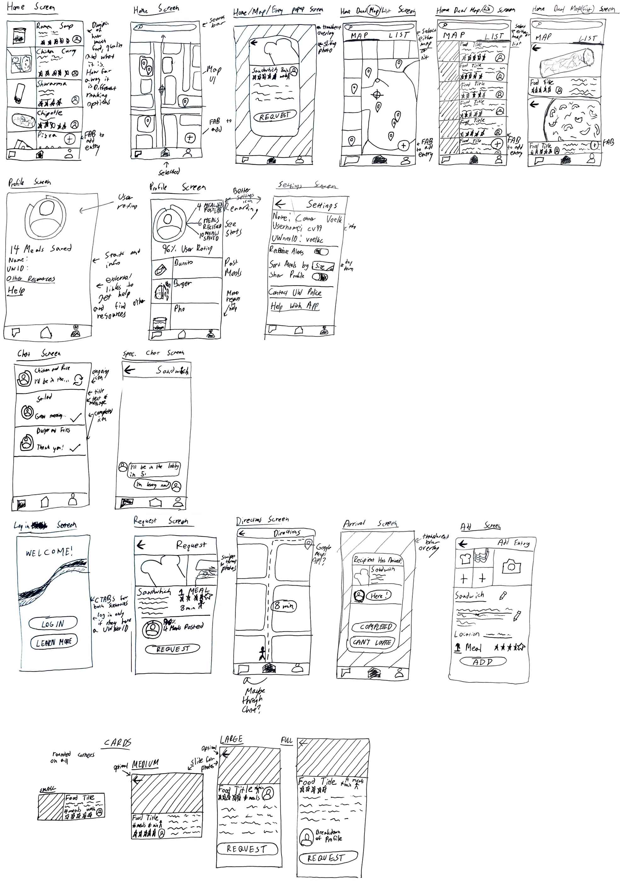
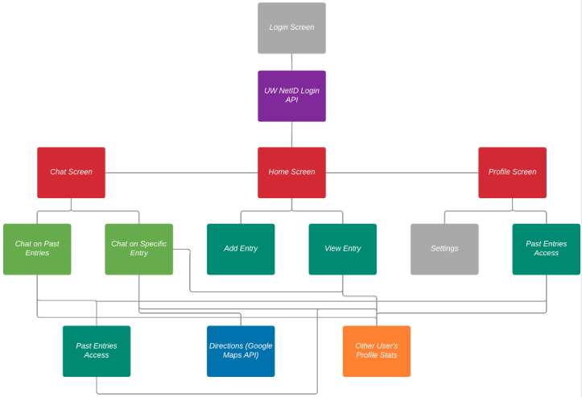
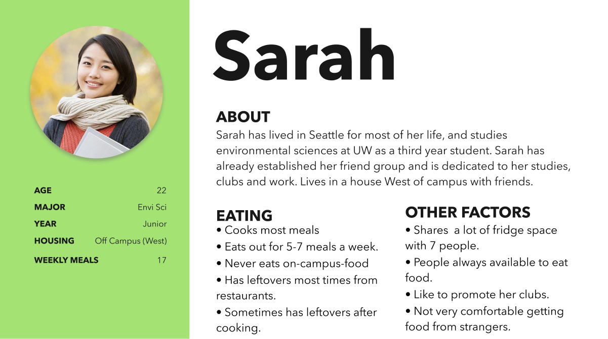
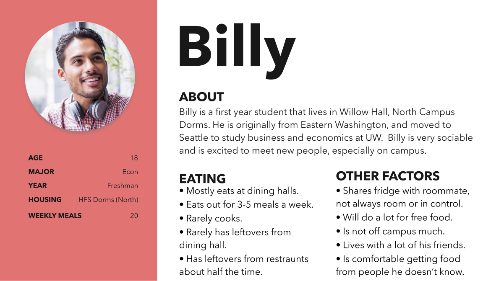
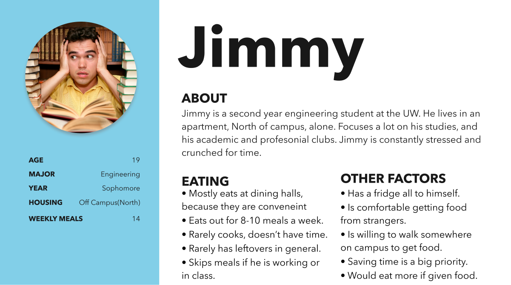

Rideshare Safety Feature
PokeDB
Made With
DogShare
Made With
Access
Problem Space
The Dog Share app is used to share food in an effort to minimize on campus food waste. Designed for the use of University of Washington Students, this app is exclusive to those with a UW id to increase safety. With food being shared among students in a safe manner, the infastructure exists for students to reduce their own food waste, meet new people and help their community.
My Roles
UX Designer
Responsibilities included but were not limited to performing user research, prototyping, user testing, developing user journey maps and personas to supplement designs and delivering a final high fidelity design.
UI Prototyping
High Fidelity
Low Fidelity
User Joruney Map

Site Map
Personas
  User Research
As the lead designer for this project it was my responsiblity to do some initial user research to understand what space our app should exist in. Interviews with 5 univseristy students were conducted and a survey with over 200 responses was alsoInsights gained from surveys and interviews were that people would like to be more conscious of their food waste and college students living on campus in particular would be eager to pickup strangers' leftovers for free.
Conscious Consumer
Made With
Kno
Made With


Death in the US
Made With
Access
Problem Space
I and a team of UW students worked with a data set created by the Center for Disease Control and Prevention. This data set includes the crude death rate and age adjusted death rate of the top leading causes of death in the United States. Our interactive webpage is intended for individuals who are interested in learning about the top leading causes of deaths in the United States, whether it be by year, states, or as a nation. We are hoping these individuals have a goal of using this data in order to figure out what causes are most important to address in order to decrease death rate due to these causes. Through our project, we want to answer these three questions for our audience:
- What is the age adjusted death rate for each state for a cause of death in a given year?
- How do causes of death (on national) change over time (if any)?
- What are the all time leading causes of death in each state?
Individual Contribution
I created the entire app UI and theme, and the final page with the map. I used my skills with R, Shiny, HTML and CSS. This was a team project completed for UW's INFO 201 final project. The map is designed to show outliers and regional trends in causes of deaths in the United States